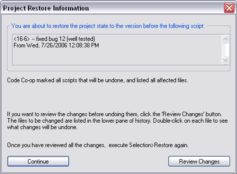

One of the most useful things you can do with History is revert your project back to any historical version.
Select a version in your project history and, from the context or Selection menu, choose "Restore..." The following dialog appears.

You can select Review Changes before you proceed. You will see all the scripts to be undone marked with. In the Details pane, at the bottom, you will see a comprehensive list of files that will be affected by the restore. Double-clicking on any file will open it in the visual differ where you can review the changes to be undone.
After you're done reviewing, execute Selection>Restore again and click the Continue button.
There are many more things you can do with History. You can export whole project versions to arbitrary locations (including FTP sites in version Pro), you can export file versions, start new project branches, merge branches, and so on.